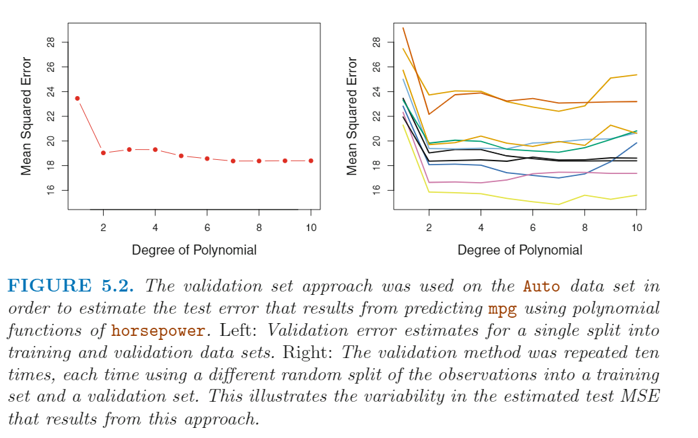
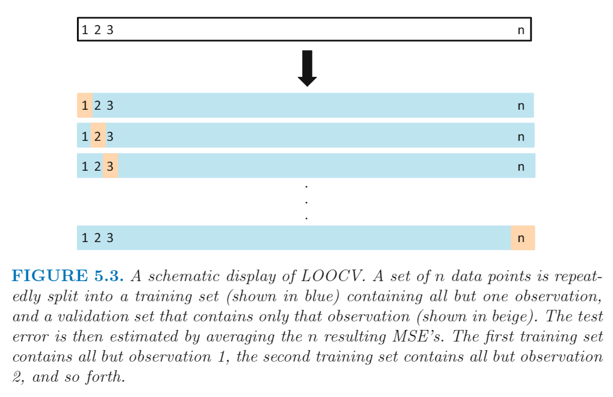
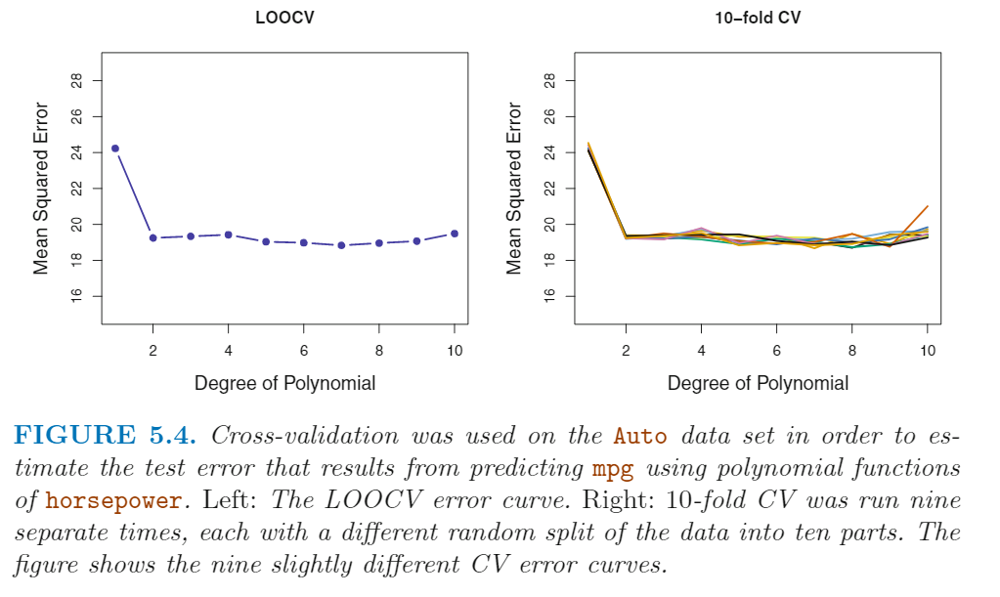
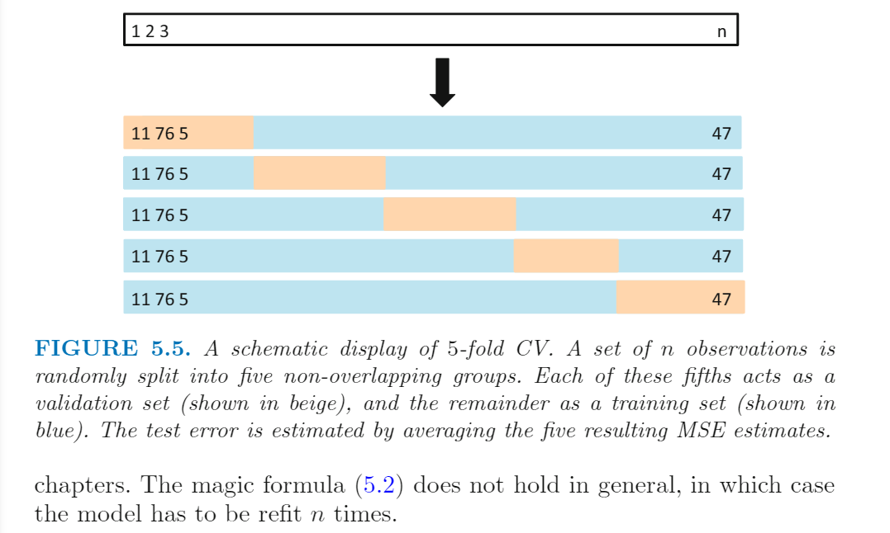
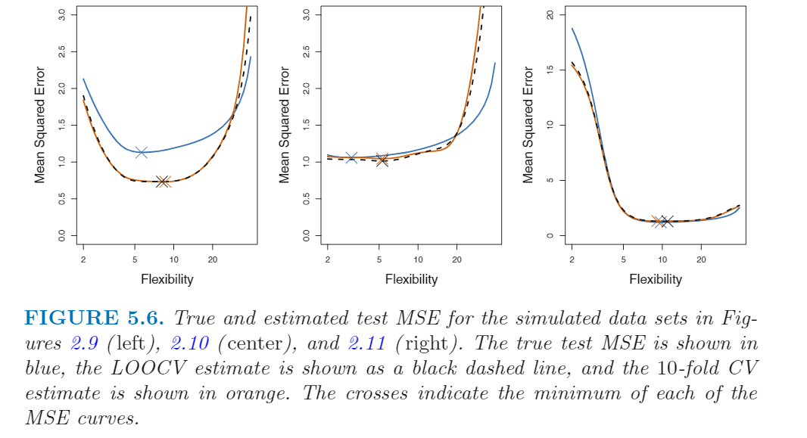
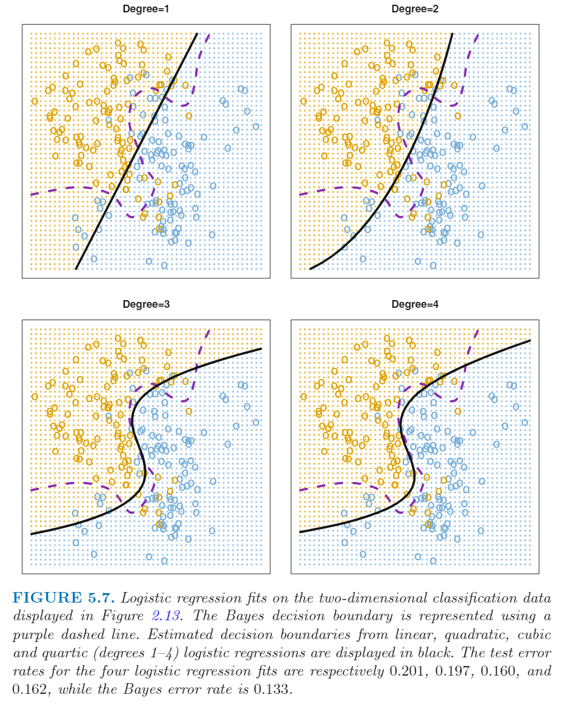
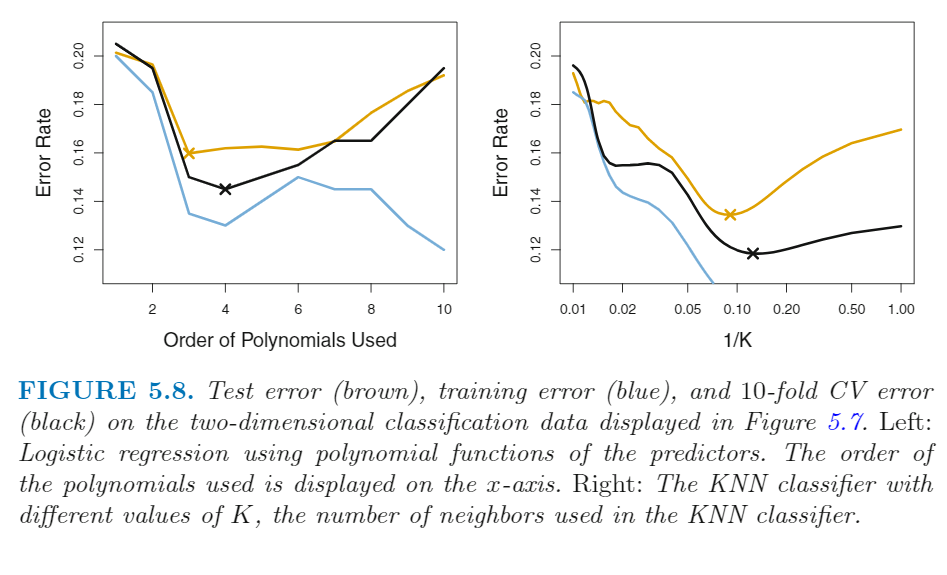
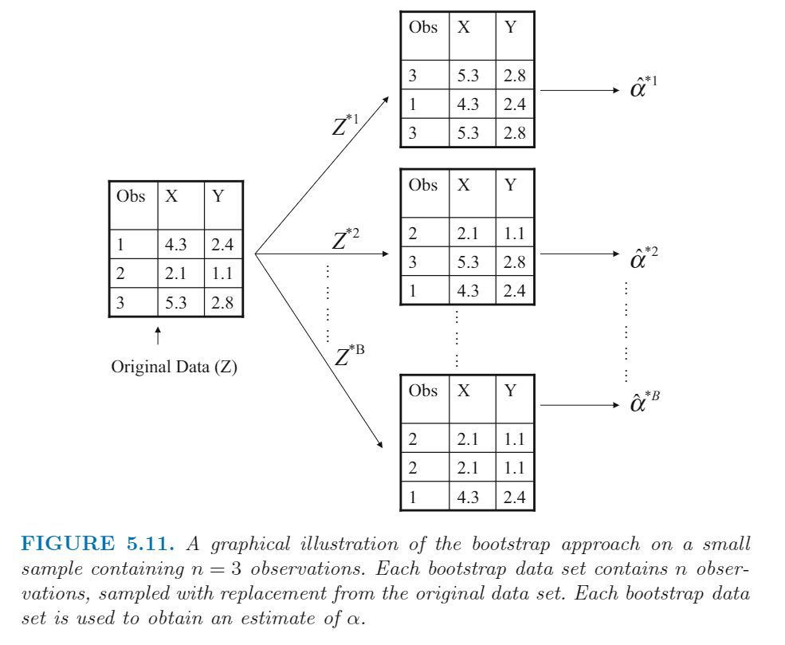
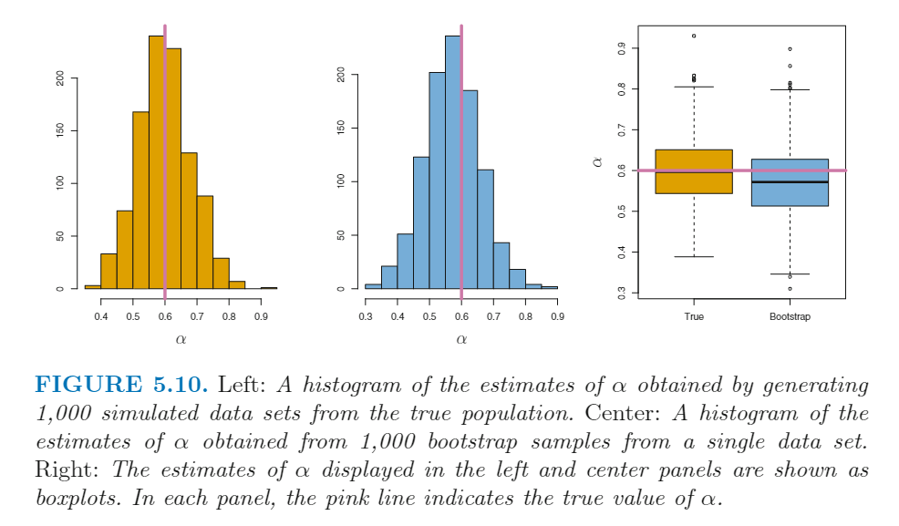

<!DOCTYPE html>


<html lang="zh-CN">


<head>
  <meta charset="utf-8" />
    
  <meta name="viewport" content="width=device-width, initial-scale=1, maximum-scale=1" />
  <title>
    重复抽样方法 |  VincereZhou&#39;s blog
  </title>
  <meta name="generator" content="hexo-theme-ayer">
  
  <link rel="shortcut icon" href="/images/mojie.jpg" />
  
  
<link rel="stylesheet" href="/dist/main.css">

  <link rel="stylesheet" href="https://cdn.jsdelivr.net/gh/Shen-Yu/cdn/css/remixicon.min.css">
  
<link rel="stylesheet" href="/css/custom.css">

  
  <script src="https://cdn.jsdelivr.net/npm/pace-js@1.0.2/pace.min.js"></script>
  
  

  

<link rel="alternate" href="/atom.xml" title="VincereZhou's blog" type="application/atom+xml">
<link href="https://cdn.bootcss.com/KaTeX/0.11.1/katex.min.css" rel="stylesheet" /></head>

</html>

<body>
  <div id="app">
    
      
    <main class="content on">
      <section class="outer">
  <article
  id="post-重复抽样方法"
  class="article article-type-post"
  itemscope
  itemprop="blogPost"
  data-scroll-reveal
>
  <div class="article-inner">
    
    <header class="article-header">
       
<h1 class="article-title sea-center" style="border-left:0" itemprop="name">
  重复抽样方法
</h1>
 

    </header>
     
    <div class="article-meta">
      <a href="/posts/c54c0f20/" class="article-date">
  <time datetime="2021-05-26T05:43:31.000Z" itemprop="datePublished">2021-05-26</time>
</a> 
  <div class="article-category">
    <a class="article-category-link" href="/categories/%E7%90%86%E8%AE%BA%E5%AD%A6%E4%B9%A0/">理论学习</a> / <a class="article-category-link" href="/categories/%E7%90%86%E8%AE%BA%E5%AD%A6%E4%B9%A0/%E7%BA%BF%E6%80%A7%E6%A8%A1%E5%9E%8B/">线性模型</a>
  </div>
  
<div class="word_count">
    <span class="post-time">
        <span class="post-meta-item-icon">
            <i class="ri-quill-pen-line"></i>
            <span class="post-meta-item-text"> 字数统计:</span>
            <span class="post-count">3.2k</span>
        </span>
    </span>

    <span class="post-time">
        &nbsp; | &nbsp;
        <span class="post-meta-item-icon">
            <i class="ri-book-open-line"></i>
            <span class="post-meta-item-text"> 阅读时长≈</span>
            <span class="post-count">11 分钟</span>
        </span>
    </span>
</div>
 
    </div>
      
    <div class="tocbot"></div>


  
    <div class="article-entry" itemprop="articleBody">
       
  <p>ISL 真是好书！</p>
<span id="more"></span> 
<h1>资料</h1>
<p><a target="_blank" rel="noopener" href="https://www.statlearning.com/">An Introduction to Statistical Learning</a>，下文简称 <strong>ISL</strong></p>
<h1>概述</h1>
<p>重复抽样方法 (<em>Resampling methods</em>) 是统计中的一个常用工具。通过对一个训练集不断地提取子集，然后用同一个模型进行拟合，来获取这个模型的更多的信息，比如 <em>variance</em> 。</p>
<p>重复抽样方法最常用的是 <strong>交叉验证</strong>(<em>cross-validation</em>) 和 <strong>自助法</strong>(<em>bootstrap</em>) 。这两种方法都很重要，比如交叉验证方法可以用来估计模型的 <em>test error</em> ，从而用来评价模型/方法的表现。这种评估模型表现的过程称为 <em>model assessment</em> ，而选择一个模型的自由度（<em>level of flexibility</em>）称为 <em>model selection</em> 。自助法一般用于评估参数估计的准确性。</p>
<h1>交叉验证</h1>
<p>在 ISL 前面的章节里提过了 <em>test error rate</em> 和 <em>trainging error rate</em> 。一般我们评价模型的好坏会用 <em>test error rate</em> ，但是这就要求除了有<em>training data set</em> 外，还需要有 <em>test data set</em> 。但是实际情况里，我们可能会没有一个比较大的 <em>test data</em> 来估计 <em>test error rate</em> ，也就是说我们只有一个群体的数据。通过交叉验证方法，我们可以人为的从训练集中提取一个子集来计算 <em>test error rate</em> 。</p>
<h2 id="The-Validation-Set-Approach">The Validation Set Approach</h2>
<p>这个方法的思路就是将所有观测值分为两部分，训练集和验证集。训练集用于拟合模拟，然后将得到的模型用于验证集，计算 <em>test error rate</em> ，数量性状一般就是计算 <strong>均方误差(MSE)</strong>。</p>
<p>在 ISL 的书中提到了一个例子，在 Auto 数据集中，mpg 和 horsepower 之间存在非线性关系，然后用 horsepower 和 horsepower<sup>2</sup> 的模型效果更好。<strong>我们很容易想到如果继续添加立方项或者更多的项，效果会不会更好？</strong> 这在前面的例子中是通过查看立方项和更高的项的 P 值来确定的，但是我们也可以用交叉验证来回答。我们可以随机将 392 个观测值随机分为两个集合，一半作为训练集，一半作为验证集；对于相同的训练集，采用不同的模型进行拟合，然后用于同样的验证集计算MSE。效果如下，左边为一次结果，右边为重复十次结果。十次重复结果各不相同，均方误差最小值的项均不相同，我们只能说简单线性回归不是最优解，然后高于2项的回归即便有提升，提升幅度一般也比较小。</p>
<p></p>
<p><strong>The validation set approach</strong> 这种方法思路非常简单，易于使用，但是又两个潜在的缺点：</p>
<ol>
<li>就像上面右图的结果，多次抽样的结果差异较大，取决于你把哪些个体放在训练集，把哪些个体放在验证集。</li>
<li>这个方法，仅仅只使用了一部分个体（划定为训练集的个体）用于拟合模型。一般来说，样本量越少，样本拟合效果越差，因此这里计算得到的 test error rate 比实际情况要高。</li>
</ol>
<h2 id="Leave-One-Out-Cross-Validation">Leave-One-Out Cross-Validation</h2>
<p><em>Leave-One-Out Cross-Validation</em> (LOOCV) 接近于上面的 <em>validation set approach</em> ，但是这种方法尝试来弥补上面这种方法的缺点。</p>
<p>LOOCV 也是把观测值分为两个群体，但区别在于它只将一个个体划定给验证集，将其他的 n-1 个个体划定给训练集，用于拟合模型，然后预测留出来的一个个体的，计算MSE。由于只有一个个体, MSE 的公式变为<br>
$$<br>
\mathrm{MSE}<em>{1}=\left(y</em>{1}-\hat{y}_{1}\right)^{2}<br>
$$<br>
虽然MSE<sub>1</sub> 是无偏的，但是它是一个很糟糕的估计值，因为变异太大。</p>
<p>我们可以重复这个过程，让所有个体都做一次验证个体，也就是总共重复n次。图示如下：</p>
<p></p>
<p>然后我们计算这n次的平均MSE<br>
$$<br>
\mathrm{CV}<em>{(n)}=\frac{1}{n} \sum</em>{i=1}^{n} \mathrm{MSE}_{i}<br>
$$<br>
LOOCV 方法相比于上面的 validation set 方法又很多优势。首先，LOOCV 方法有更小的 bias，因为 LOOCV 方法用了接近所有个体来拟合模型，而 validation set 只用了一半。因此，LOOCV 方法不会高估 <em>test error rate</em> 。其次，validation set 随机划分群体使得多次重复结果的差异较大，而多次重复 LOOCV 也只会产生一个相同的结果，LOOCV 方法根本没有训练集和验证集划分的随意性问题。</p>
<p>我们对 Auto 数据集采用 LOOCV 方法进行计算，结果如下图左图（右图为9次单独的 10-fold CV结果，每次均随机地将群体分成10份。从这里可以看出 10-fold CV 多次结果之间的差异较小）</p>
<p></p>
<p>LOOCV 的计算量比较大，毕竟需要计算 n 次。如果 n 比较大，那么 可能会非常耗时。<strong>在最小二乘的线性回归或二项式回归分析中</strong>，存在一个简化可以使得 LOOCV 的计算量与单次模型拟合差不多，公式如下。这个式子看上去类似于普通的 MSE 的计算公式，除了分母部分增加了 一个 (1-h<sub>i</sub>)<br>
$$<br>
\mathrm{CV}<em>{(n)}=\frac{1}{n} \sum</em>{i=1}^{n}\left(\frac{y_{i}-\hat{y}<em>{i}}{1-h</em>{i}}\right)^{2}<br>
$$<br>
这里预测值 y_hat 是采用原始的最小二乘拟合的结果， <em>h<sub>i</sub></em>  是 leverage ，值在1/n 与 1 之间，表示一个观测值对模型拟合的影响程度。因此，对于 high-leverage 的点，1-  <em>h<sub>i</sub></em>  越低，这里相当于放大了残差。<br>
$$<br>
h_{i}=\frac{1}{n}+\frac{\left(x_{i}-\bar{x}\right)^{2}}{\sum_{i^{\prime}=1}^{n}\left(x_{i^{\prime}}-\bar{x}\right)^{2}}<br>
$$<br>
LOOCV 是一个一般方法，可以用于各种各样的模型，比如用于逻辑回归或LDA分析。</p>
<h2 id="k-fold-Cross-Validation">k-fold Cross-Validation</h2>
<p>LOOCV 方法的一个备选方法是 k-fold CV 方法。这种方法将所有个体随机分成相同大小的 k groups ，或者说是 k folds。将第一个 fold 视为验证集，然后用其他folds拟合模型，计算得到 MSE<sub>1</sub>。这个过程重复 k 次，每次均拿出一个fold 视为验证集，其他视为训练集，得到多个 MSE。</p>
<p>然后通过下面这个式子计算平均MSE<br>
$$<br>
\mathrm{CV}<em>{(k)}=\frac{1}{k} \sum</em>{i=1}^{k} \mathrm{MSE}_{i}<br>
$$<br>
下图便反映了这个过程</p>
<p></p>
<p>我们很容易看到，LOOCV 方法是 k-fold CV 方法的一个特例，即 k = n。在实际中，一般k会设为5或10，那么k设为5/10 相比于 设为n 的优势在哪里呢？首先最明显的就是<strong>计算量</strong>，因为 LOOCV 需要拟合模型 n 次（通过最小二乘法估计的线性模型除外），而 k-fold CV 只需要拟合 5次或10次。</p>
<p>但我们使用真实数据时，由于我们不知道真实的 test MSE ，因此我们很难决定CV估计的准确性。但是，如果我们使用模拟数据，我们计算得到真实的 test MSE，因此可以评价CV结果。下图中，我们画出了CV得到的 test error rate 估计值 和 真实的 test error rate，这里蓝线是真实值，黑色虚线是LOOCV估计值，红色线是 10-fold CV 估计值。我们可以看到 10-fold CV 和 LOOCV 结果差不多。</p>
<p></p>
<p>但我执行交叉验证时，我们的目的可能是看一个统计模型应用在一个与训练集独立的数据中的效果，也就是说， 我们感兴趣地是 test MSE 的 估计值。但是有时候，我们仅仅是对 <em>estimated test MSE</em> 曲线的最小值，比如比较一系列统计方法/模型的优劣，一种模型但是使用不同水平的 <em>flexibility</em> 的比较，为了得到最佳的模型，或者最佳的 <em>flexibility</em> 。这种情况下，test MSE 的最小值的位置是最重要的，但是实际test MSE的大小不重要。根据上面的图(5.6)，我们可以看到 CV 的MSE估计值可能是低估的，但是通过CV曲线来查找最佳的 <em>flexibility</em> 水平基本和真实情况差不多。</p>
<h2 id="Bias-Variance-Trade-Off-for-k-fold-CV">Bias-Variance Trade-Off for k-fold CV</h2>
<p>前面起到 k-fold CV 相比于 LOOCV 的优点是减少计算量，其实 k-fold CV 相比于 LOOCV 还有一个优点，就是 <strong><em>test error rate</em> 估计更准确</strong>。这和 bias-variance trade-off 有关。</p>
<p>前面提到过 validation set 方法估计得到的 test error rate 会比真实值高，因为只用了一半数据来拟合模型。通过这个逻辑，LOOCV 方法会给出一个接近无偏的 test error ，因为几乎用了全部的数据来拟合模型。然后 k-fold CV 方法的 bias 会介于这二者之间。</p>
<p>但是我们知道，bias 并不是我们关心的估计过程的唯一指标，我们还关心 variance ，结果表明 LOOCV 比 k-fold CV 有更高的 variance 。为什么是这样呢？当我们执行 LOOCV 方法时，我们拟合的n个模型，几乎都是使用相同的数据；因此，这些模型的拟合结果之间具有高度的相关性。但是当我们执行 k-fold CV 时，k 个拟合的模型之间相关较弱，因为训练集数据之间的重合程度较小。因为很多高度相关的数量性状的均值比相关程度较低的数量性状均值的 variance 更小，因此 LOOCV 方法得到的 test error 估计值通常比 k-fold CV 方法有更高的 variance。</p>
<p>总结一下，综合考虑 bias 和 variance ，我们容易得到 k=5 或 k=10 的 k-fold CV 得到的 test error estimates 最佳，既不会有很高的 bias ，也不会有很高的 variance。</p>
<h2 id="Cross-Validation-on-Classification-problems">Cross-Validation on Classification problems</h2>
<p>上面提高的交叉验证的使用均是基于<strong>数量性状</strong>，因此都是用 MSE 来衡量 test error 。但是交叉验证同样可以用于质量性状的分析上，其实大同小异，只是用 test error rate 替换 MSE 来衡量 test error。例如， LOOCV 的公式如下<br>
$$<br>
\mathrm{CV}<em>{(n)}=\frac{1}{n} \sum</em>{i=1}^{n} \mathrm{Err}_{i}<br>
$$</p>
<p>$$<br>
\operatorname{Err}<em>{i}=I\left(y</em>{i} \neq \hat{y}_{i}\right)<br>
$$</p>
<p>下图为一个模拟数据的逻辑回归结果，p=2，通过多项式回归不断增加自由度。</p>
<p></p>
<p>但是在真实的数据中，真实的决策线和 test error rate 均是未知的。因此我们需要决定上面的四种逻辑回归哪一种比较好。我们可以通过交叉验证来实现这一点。下图的左图显示了十倍交叉验证的结果（黑线），真实的 test error 是棕线，十倍交叉验证的结果很好的预测了真实结果（略低估了真实结果）。右图显示了KNN的结果，我们可以随着 flexibility 的增加，traing error rate 迅速下降，而 test error rate 呈U字型变化，这再次说明了不能用 training error rate 来说明模型的好坏。</p>
<p></p>
<h1>自助法</h1>
<p>自助法可以衡量一个给定估计值或方法的不确定性。作为一个简单的例子，自助法可以用来估计线性回归拟合参数的标准误，这并不是很实用，因为R在做回归分析的时候会自动给出标准误。但是像一些复杂的统计方法，或者软件不能自动给出的不确定性，自助法就有用了。</p>
<p>如果我们使用模拟数据，计算一个参数估计的标准误，可以直接通过多次抽样直接计算多次参数估计的标准差即可。但是实际情况里，我们没法这么做，自助法则是通过一个数据集，生成多个数据集（比如1000个），然后计算所有生成的数据集中估计参数的标准差，做为估计参数标准误的估计值。</p>
<p>生成数据集的过程如下，加入原始数据是3条数据，生成的数据集也都是3条数据，生成的数据集的每条数据都是<strong>可重复地</strong>从原始数据集中进行随机抽样的结果。</p>
<p></p>
<p>自助法效果如下，左图为多次创建数据集的结果，中图为使用一个数据集采用自助法的结果，右图为二者比较，我们可以看到自助法与真实结果很接近。</p>
<p></p>
 
      <!-- reward -->
      
      <div id="reword-out">
        <div id="reward-btn">
          打赏
        </div>
      </div>
      
    </div>
    

    <!-- copyright -->
    
    <div class="declare">
      <ul class="post-copyright">
        <li>
          <i class="ri-copyright-line"></i>
          <strong>版权声明： </strong>
          
          本博客所有文章除特别声明外，著作权归作者所有。转载请注明出处！
          
        </li>
      </ul>
    </div>
    
    <footer class="article-footer">
       
<div class="share-btn">
      <span class="share-sns share-outer">
        <i class="ri-share-forward-line"></i>
        分享
      </span>
      <div class="share-wrap">
        <i class="arrow"></i>
        <div class="share-icons">
          
          <a class="weibo share-sns" href="javascript:;" data-type="weibo">
            <i class="ri-weibo-fill"></i>
          </a>
          <a class="weixin share-sns wxFab" href="javascript:;" data-type="weixin">
            <i class="ri-wechat-fill"></i>
          </a>
          <a class="qq share-sns" href="javascript:;" data-type="qq">
            <i class="ri-qq-fill"></i>
          </a>
          <a class="douban share-sns" href="javascript:;" data-type="douban">
            <i class="ri-douban-line"></i>
          </a>
          <!-- <a class="qzone share-sns" href="javascript:;" data-type="qzone">
            <i class="icon icon-qzone"></i>
          </a> -->
          
          <a class="facebook share-sns" href="javascript:;" data-type="facebook">
            <i class="ri-facebook-circle-fill"></i>
          </a>
          <a class="twitter share-sns" href="javascript:;" data-type="twitter">
            <i class="ri-twitter-fill"></i>
          </a>
          <a class="google share-sns" href="javascript:;" data-type="google">
            <i class="ri-google-fill"></i>
          </a>
        </div>
      </div>
</div>

<div class="wx-share-modal">
    <a class="modal-close" href="javascript:;"><i class="ri-close-circle-line"></i></a>
    <p>扫一扫，分享到微信</p>
    <div class="wx-qrcode">
      
    </div>
</div>

<div id="share-mask"></div>  
  <ul class="article-tag-list" itemprop="keywords"><li class="article-tag-list-item"><a class="article-tag-list-link" href="/tags/%E6%95%B0%E6%8D%AE%E5%88%86%E6%9E%90/" rel="tag">数据分析</a></li><li class="article-tag-list-item"><a class="article-tag-list-link" href="/tags/%E7%90%86%E8%AE%BA%E5%AD%A6%E4%B9%A0/" rel="tag">理论学习</a></li><li class="article-tag-list-item"><a class="article-tag-list-link" href="/tags/%E7%BA%BF%E6%80%A7%E6%A8%A1%E5%9E%8B/" rel="tag">线性模型</a></li></ul>

    </footer>
  </div>

   
  <nav class="article-nav">
    
      <a href="/posts/eb9174d6/" class="article-nav-link">
        <strong class="article-nav-caption">上一篇</strong>
        <div class="article-nav-title">
          
            线性模型选择与正则化
          
        </div>
      </a>
    
    
      <a href="/posts/749a327e/" class="article-nav-link">
        <strong class="article-nav-caption">下一篇</strong>
        <div class="article-nav-title">逻辑回归及其他分类变量分析方法</div>
      </a>
    
  </nav>

   
<!-- valine评论 -->
<div id="vcomments-box">
  <div id="vcomments"></div>
</div>
<script src="//cdn1.lncld.net/static/js/3.0.4/av-min.js"></script>
<script src="https://cdn.jsdelivr.net/npm/valine@1.4.14/dist/Valine.min.js"></script>
<script>
  new Valine({
    el: "#vcomments",
    app_id: "yHN3kf7fHt5wvleM2DVoHLdY-gzGzoHsz",
    app_key: "RPIwmdftljIzOtAULwc7JCAp",
    path: window.location.pathname,
    avatar: "monsterid",
    placeholder: "1.昵称和邮箱必填，网址选填",
    recordIP: true,
  });
  const infoEle = document.querySelector("#vcomments .info");
  if (infoEle && infoEle.childNodes && infoEle.childNodes.length > 0) {
    infoEle.childNodes.forEach(function (item) {
      item.parentNode.removeChild(item);
    });
  }
</script>
<style>
  #vcomments-box {
    padding: 5px 30px;
  }

  @media screen and (max-width: 800px) {
    #vcomments-box {
      padding: 5px 0px;
    }
  }

  #vcomments-box #vcomments {
    background-color: #fff;
  }

  .v .vlist .vcard .vh {
    padding-right: 20px;
  }

  .v .vlist .vcard {
    padding-left: 10px;
  }
</style>

 
   
     
</article>

</section>
      <footer class="footer">
  <div class="outer">
    <ul>
      <li>
        Copyrights &copy;
        2019-2021
        <i class="ri-heart-fill heart_icon"></i> Vincere Zhou
      </li>
    </ul>
    <ul>
      <li>
        
        
        <span>
  <span><i class="ri-user-3-fill"></i>访问人数:<span id="busuanzi_value_site_uv"></span></s>
  <span class="division">|</span>
  <span><i class="ri-eye-fill"></i>浏览次数:<span id="busuanzi_value_page_pv"></span></span>
</span>
        
      </li>
    </ul>
    <ul>
      
    </ul>
    <ul>
      
    </ul>
    <ul>
      <li>
        <!-- cnzz统计 -->
        
        <script type="text/javascript" src='https://s9.cnzz.com/z_stat.php?id=1278069914&amp;web_id=1278069914'></script>
        
      </li>
    </ul>

    <!-- 与只只在一起天数 -->
	<ul>
		<li><span id="lovetime_span"></span></li>
	</ul>
    <script type="text/javascript">			
        function show_runtime() {
            window.setTimeout("show_runtime()", 1000);
            X = new Date("03/04/2021 22:11:00");
            Y = new Date();
            T = (Y.getTime() - X.getTime());
            M = 24 * 60 * 60 * 1000;
            a = T / M;
            A = Math.floor(a);
            b = (a - A) * 24;
            B = Math.floor(b);
            c = (b - B) * 60;
            C = Math.floor((b - B) * 60);
            D = Math.floor((c - C) * 60);
            lovetime_span.innerHTML = "只只和周周在一起了 " + A + "天" + B + "小时" + C + "分" + D + "秒"
        }
        show_runtime();
    </script>

  </div>
</footer>
      <div class="float_btns">
        <div class="totop" id="totop">
  <i class="ri-arrow-up-line"></i>
</div>

<div class="todark" id="todark">
  <i class="ri-moon-line"></i>
</div>

      </div>
    </main>
    <aside class="sidebar on">
      <button class="navbar-toggle"></button>
<nav class="navbar">
  
  <div class="logo">
    <a href="/"></a>
  </div>
  
  <ul class="nav nav-main">
    
    <li class="nav-item">
      <a class="nav-item-link" href="/">主页</a>
    </li>
    
    <li class="nav-item">
      <a class="nav-item-link" href="/archives">归档</a>
    </li>
    
    <li class="nav-item">
      <a class="nav-item-link" href="/categories">分类</a>
    </li>
    
    <li class="nav-item">
      <a class="nav-item-link" href="/tags">标签</a>
    </li>
    
    <li class="nav-item">
      <a class="nav-item-link" href="/friends">友链</a>
    </li>
    
    <li class="nav-item">
      <a class="nav-item-link" href="/posts/ac7827ff">我的只只</a>
    </li>
    
    <li class="nav-item">
      <a class="nav-item-link" href="/about">关于我</a>
    </li>
    
  </ul>
</nav>
<nav class="navbar navbar-bottom">
  <ul class="nav">
    <li class="nav-item">
      
      <a class="nav-item-link nav-item-search"  title="搜索">
        <i class="ri-search-line"></i>
      </a>
      
      
      <a class="nav-item-link" target="_blank" href="/atom.xml" title="RSS Feed">
        <i class="ri-rss-line"></i>
      </a>
      
    </li>
  </ul>
</nav>
<div class="search-form-wrap">
  <div class="local-search local-search-plugin">
  <input type="search" id="local-search-input" class="local-search-input" placeholder="Search...">
  <div id="local-search-result" class="local-search-result"></div>
</div>
</div>
    </aside>
    <script>
      if (window.matchMedia("(max-width: 768px)").matches) {
        document.querySelector('.content').classList.remove('on');
        document.querySelector('.sidebar').classList.remove('on');
      }
    </script>
    <div id="mask"></div>

<!-- #reward -->
<div id="reward">
  <span class="close"><i class="ri-close-line"></i></span>
  <p class="reward-p"><i class="ri-cup-line"></i>请我喝杯咖啡吧~</p>
  <div class="reward-box">
    
    <div class="reward-item">
      
      <span class="reward-type">支付宝</span>
    </div>
    
    
    <div class="reward-item">
      
      <span class="reward-type">微信</span>
    </div>
    
  </div>
</div>
    
<script src="/js/jquery-2.0.3.min.js"></script>


<script src="/js/lazyload.min.js"></script>

<!-- Tocbot -->


<script src="/js/tocbot.min.js"></script>

<script>
  tocbot.init({
    tocSelector: '.tocbot',
    contentSelector: '.article-entry',
    headingSelector: 'h1, h2, h3, h4, h5, h6',
    hasInnerContainers: true,
    scrollSmooth: true,
    scrollContainer: 'main',
    positionFixedSelector: '.tocbot',
    positionFixedClass: 'is-position-fixed',
    fixedSidebarOffset: 'auto'
  });
</script>

<script src="https://cdn.jsdelivr.net/npm/jquery-modal@0.9.2/jquery.modal.min.js"></script>
<link rel="stylesheet" href="https://cdn.jsdelivr.net/npm/jquery-modal@0.9.2/jquery.modal.min.css">
<script src="https://cdn.jsdelivr.net/npm/justifiedGallery@3.7.0/dist/js/jquery.justifiedGallery.min.js"></script>

<script src="/dist/main.js"></script>

<!-- ImageViewer -->

<!-- Root element of PhotoSwipe. Must have class pswp. -->
<div class="pswp" tabindex="-1" role="dialog" aria-hidden="true">

    <!-- Background of PhotoSwipe. 
         It's a separate element as animating opacity is faster than rgba(). -->
    <div class="pswp__bg"></div>

    <!-- Slides wrapper with overflow:hidden. -->
    <div class="pswp__scroll-wrap">

        <!-- Container that holds slides. 
            PhotoSwipe keeps only 3 of them in the DOM to save memory.
            Don't modify these 3 pswp__item elements, data is added later on. -->
        <div class="pswp__container">
            <div class="pswp__item"></div>
            <div class="pswp__item"></div>
            <div class="pswp__item"></div>
        </div>

        <!-- Default (PhotoSwipeUI_Default) interface on top of sliding area. Can be changed. -->
        <div class="pswp__ui pswp__ui--hidden">

            <div class="pswp__top-bar">

                <!--  Controls are self-explanatory. Order can be changed. -->

                <div class="pswp__counter"></div>

                <button class="pswp__button pswp__button--close" title="Close (Esc)"></button>

                <button class="pswp__button pswp__button--share" style="display:none" title="Share"></button>

                <button class="pswp__button pswp__button--fs" title="Toggle fullscreen"></button>

                <button class="pswp__button pswp__button--zoom" title="Zoom in/out"></button>

                <!-- Preloader demo http://codepen.io/dimsemenov/pen/yyBWoR -->
                <!-- element will get class pswp__preloader--active when preloader is running -->
                <div class="pswp__preloader">
                    <div class="pswp__preloader__icn">
                        <div class="pswp__preloader__cut">
                            <div class="pswp__preloader__donut"></div>
                        </div>
                    </div>
                </div>
            </div>

            <div class="pswp__share-modal pswp__share-modal--hidden pswp__single-tap">
                <div class="pswp__share-tooltip"></div>
            </div>

            <button class="pswp__button pswp__button--arrow--left" title="Previous (arrow left)">
            </button>

            <button class="pswp__button pswp__button--arrow--right" title="Next (arrow right)">
            </button>

            <div class="pswp__caption">
                <div class="pswp__caption__center"></div>
            </div>

        </div>

    </div>

</div>

<link rel="stylesheet" href="https://cdn.jsdelivr.net/npm/photoswipe@4.1.3/dist/photoswipe.min.css">
<link rel="stylesheet" href="https://cdn.jsdelivr.net/npm/photoswipe@4.1.3/dist/default-skin/default-skin.min.css">
<script src="https://cdn.jsdelivr.net/npm/photoswipe@4.1.3/dist/photoswipe.min.js"></script>
<script src="https://cdn.jsdelivr.net/npm/photoswipe@4.1.3/dist/photoswipe-ui-default.min.js"></script>

<script>
    function viewer_init() {
        let pswpElement = document.querySelectorAll('.pswp')[0];
        let $imgArr = document.querySelectorAll(('.article-entry img:not(.reward-img)'))

        $imgArr.forEach(($em, i) => {
            $em.onclick = () => {
                // slider展开状态
                // todo: 这样不好，后面改成状态
                if (document.querySelector('.left-col.show')) return
                let items = []
                $imgArr.forEach(($em2, i2) => {
                    let img = $em2.getAttribute('data-idx', i2)
                    let src = $em2.getAttribute('data-target') || $em2.getAttribute('src')
                    let title = $em2.getAttribute('alt')
                    // 获得原图尺寸
                    const image = new Image()
                    image.src = src
                    items.push({
                        src: src,
                        w: image.width || $em2.width,
                        h: image.height || $em2.height,
                        title: title
                    })
                })
                var gallery = new PhotoSwipe(pswpElement, PhotoSwipeUI_Default, items, {
                    index: parseInt(i)
                });
                gallery.init()
            }
        })
    }
    viewer_init()
</script>

<!-- MathJax -->

<script type="text/x-mathjax-config">
  MathJax.Hub.Config({
      tex2jax: {
          inlineMath: [ ['$','$'], ["\\(","\\)"]  ],
          processEscapes: true,
          skipTags: ['script', 'noscript', 'style', 'textarea', 'pre', 'code']
      }
  });

  MathJax.Hub.Queue(function() {
      var all = MathJax.Hub.getAllJax(), i;
      for(i=0; i < all.length; i += 1) {
          all[i].SourceElement().parentNode.className += ' has-jax';
      }
  });
</script>

<script src="https://cdn.jsdelivr.net/npm/mathjax@2.7.6/unpacked/MathJax.js?config=TeX-AMS-MML_HTMLorMML"></script>
<script>
  var ayerConfig = {
    mathjax: true
  }
</script>

<!-- Katex -->

<!-- busuanzi  -->


<script src="/js/busuanzi-2.3.pure.min.js"></script>


<!-- ClickLove -->

<!-- ClickBoom1 -->

<!-- ClickBoom2 -->

<!-- CodeCopy -->


<link rel="stylesheet" href="/css/clipboard.css">

<script src="https://cdn.jsdelivr.net/npm/clipboard@2/dist/clipboard.min.js"></script>
<script>
  function wait(callback, seconds) {
    var timelag = null;
    timelag = window.setTimeout(callback, seconds);
  }
  !function (e, t, a) {
    var initCopyCode = function(){
      var copyHtml = '';
      copyHtml += '<button class="btn-copy" data-clipboard-snippet="">';
      copyHtml += '<i class="ri-file-copy-2-line"></i><span>COPY</span>';
      copyHtml += '</button>';
      $(".highlight .code pre").before(copyHtml);
      $(".article pre code").before(copyHtml);
      var clipboard = new ClipboardJS('.btn-copy', {
        target: function(trigger) {
          return trigger.nextElementSibling;
        }
      });
      clipboard.on('success', function(e) {
        let $btn = $(e.trigger);
        $btn.addClass('copied');
        let $icon = $($btn.find('i'));
        $icon.removeClass('ri-file-copy-2-line');
        $icon.addClass('ri-checkbox-circle-line');
        let $span = $($btn.find('span'));
        $span[0].innerText = 'COPIED';
        
        wait(function () { // 等待两秒钟后恢复
          $icon.removeClass('ri-checkbox-circle-line');
          $icon.addClass('ri-file-copy-2-line');
          $span[0].innerText = 'COPY';
        }, 2000);
      });
      clipboard.on('error', function(e) {
        e.clearSelection();
        let $btn = $(e.trigger);
        $btn.addClass('copy-failed');
        let $icon = $($btn.find('i'));
        $icon.removeClass('ri-file-copy-2-line');
        $icon.addClass('ri-time-line');
        let $span = $($btn.find('span'));
        $span[0].innerText = 'COPY FAILED';
        
        wait(function () { // 等待两秒钟后恢复
          $icon.removeClass('ri-time-line');
          $icon.addClass('ri-file-copy-2-line');
          $span[0].innerText = 'COPY';
        }, 2000);
      });
    }
    initCopyCode();
  }(window, document);
</script>


<!-- CanvasBackground -->


    
  </div>
<script src="/live2dw/lib/L2Dwidget.min.js?094cbace49a39548bed64abff5988b05"></script><script>L2Dwidget.init({"pluginRootPath":"live2dw/","pluginJsPath":"lib/","pluginModelPath":"assets/","tagMode":false,"debug":false,"model":{"jsonPath":"live2d-widget-model-wanko"},"display":{"position":"left","width":150,"height":300,"hOffset":80,"vOffset":-70},"mobile":{"show":false,"scale":0.5},"log":false});</script></body>

</html>